Research
Optomechanical Dark Matter Detection

According to the Lambda-CDM model (the current standard model of big bang cosmology), ordinary matter and energy, the directly observable matter and energy that we can see and touch, only accounts for about 5% of the total mass-energy density of the universe. The other 95%, the “dark” matter and energy, does not interact with the electromagnetic field so it cannot absorb, reflect, or emit light. This makes direct detection a particularly difficult task, and to date the evidence for its existence is based solely upon the missing amount of matter and energy that is inferred from observable interactions. CERN estimates that dark matter comprises 27% of the mass of the entire universe, yet it has never been observed directly. In an effort to paint a more complete picture of the universe, scientists have recently endeavored to search for dark matter, implementing complex devices over the course of decades as part of costly large-scale collaborations. Frustratingly, despite these remarkable efforts, this missing matter has evaded direct detection in every attempt thus far, and one of the greatest scientific mysteries of the modern age endures.
We intend to approach this problem from a new angle, deploying a new class of nano-menchanical devices on a laboratory scale. These devices, called optomechanical membrane accelerometers, can be joined in an array to construct ultra-low noise dark matter detectors. The sensitivity of these detectors will be enhanced by their operation at cryogenic temperatures and ultra-high-vacuum pressures. That is, temperatures near that of deep interstellar space (or well below, with the use of a dilution refrigerator) and gas pressures comparable to those measured outside the International Space Station. In addition to these extreme environmental conditions, we will employ sophisticated measurement and control techniques that enable us to exploit quantum mechanics for our benefit, further enhancing the sensitivity of our accelerometers.

A major problem with dark matter searches is the astounding degree of uncertainty in the masses of the candidate particles. Spanning 90 orders of magnitude, the extremely broad range of masses that these dark matter candidates could have highlights the relevance of an important question: where exactly do we look? Our collaboration with theorists (Swati Singh at U. Delaware and Daniel Grin at Haverford College) has shed some light on this, and they have helped us determine the “flavor” of dark matter that we are searching for: a particle, whose mass spans only two orders of magnitude, and produces a weak force that is dependent upon the very composition of the sensors used to detect it. Specifically, this weak force signal appears to be directly related to the relative neutron densities between any two materials. We will exploit this property by fixing our silicon nitride membrane accelerometers to beryllium mirrors so that the neutron densities of the two sensor components are sufficiently mismatched, thus increasing the likelihood of a direct detection.
A major technical outcome of this undertaking will be a fully-integrated cryogenic optomechanical system that will form the basis for laboratory-based ultralight dark matter searches, which we view as a more comprehensive detection strategy than what has been implemented thus far. We will demonstrate the capabilities of this platform as part of an anticipated month-long search run at cryogenic temperatures with the intention of placing new constraints on ultralight dark matter that are more robust than those imposed by the current benchmark experiments, with the added bonus of a possible direct detection.
Mailing address:
University of Arizona
College of Optical Sciences
1630 E. University Blvd.
Tucson, AZ 85721, USA
Phone: 520-621-2584 (Office)
 Quantum Optomechanics Lab
Quantum Optomechanics Lab